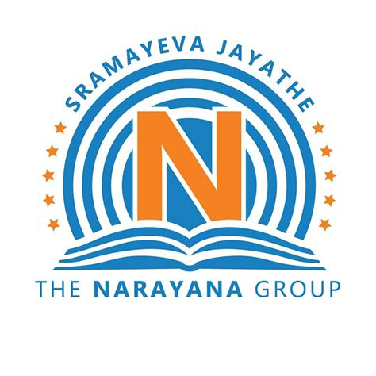

THARUN THEERUPALLY
Objective
To make more valuable connections, pursue necessary professional skills and foster personal development.
Education
| VIGNAN INSTITUTE OF TECHNOLOGY AND SCIENCE Bachelor of Technology Computer Science Engineering |
7.6(upto 3-1) | |
|---|---|---|
|  | NARAYANA JUNIOR COLLEGE (M.P.C) |
96.3% |
 |
BHASHYAM HIGH SCHOOL | 9.0 |
Projects
Q-FIESTA
Online Quiz forms the life line of the educational institutions to the functioning of examinations. This system is helpful for conducting multiple choice examinations and grade the marks immediately.
WEBSITE LINK : http://q-fiesta.rf.gd/
GO NOMAD IN INDIA
“GO NOMAD IN INDIA” is a plat form that unites all the tourism websites of all the states so that the user can go through the city or place he wants to travel and can be used for bookings and plan to visit the places accordingly.
WEBSITE LINK : http://gonomad.epizy.com/
OPTICAL CHARACTER RECOGNITION
“OPTICAL CHARACTER RECOGNITION ” is a mobile friendly application which can be used to detect and identify the characters printed on a piece of paper .It is done using the Tesseract module which is being developed continuously by Google.
SENTIMENTAL ANALYSIS
Sentiment Analysis is the process of determining whether a piece of writing is positive, negative
or neutral. It helps data analysts within large enterprises gauge public opinion, conduct
nuanced market research, monitor brand and product reputation, and understand customer
experiences
Technical Skills
| Languages | C,JAVA,PYTHON |
|---|---|
| Markup & Scripting Languages | HTML,CSS |
| Databases | MySQL |
Certificates
- Completed introduction to AI course from NPTEL.
- Completed Machine Learning For All course from Coursera.
- Completed AI For Everyone course from Coursera.
- Diploma in Computer Application and Programming from GIIT.
- Certificate of completion of IT ESSENTIALS from CISCO.
- Certified in java, C programming by UDEMY
- Certified by SOLOLEARN in HTML.
- Completed certification in ROBOTIC PROCESS AUTOMATION form Automation Anywhere University
- Done soft skills training program on TCSIoN platform.
Acheivements
- Specialized in Python Programming by University Of Michigan through Coursera.
- Certificate of appreciation for winning 2nd prize in innovative project at VITS.
- Secured 314 in GRE(Graduate Record Examination) being 151 in Verbal and 163 in Quant.
Workshops/Participations
- Attended workshop on artificial intelligence at IIT HYDERABAD.
- Attended workshop on python conducted by Osmania university.
- Attended workshop on python conducted by Ascendant Sun Projects at VITS.
- Participates at coding contest held at BITS Hyderabad.
- Participated in Internal Hackathon of SIH at VIGNAN INSTITUTE OF TECHNOLOGY AND SCIENCE.
- Participated in Capgemini tech challenge 2019 edition.
Personal Information
Name : THERUPALLY THARUN
Father’s name : THERUPALLY MALLA REDDY
Sex : Male
Date Of Birth : 01-01-2000
Languages known : English,Hindi & Telugu
Hobbies : Making memes,Playing cricket,Volunteer work.